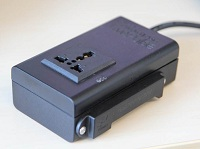
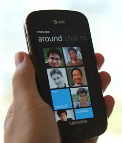

Research Interest
- Embedded Networked Systems
- Wireless and Mobile Systems
- Sensor Networks
- Cyber-Physical Systems
Tsinghua University
Microsoft Research Asia
 LiveSynergy is a novel magnetic-based wireless proximity detection platform, with accuracy and consistency better than existing solutions such as BLE, WiFi, ZigBee, and long-range RFID. Building on top of this platform, we provide cloud-based APIs that enable real-time and rich interactions between humans and their physical environment. LiveSynergy enables a range of indoor applications such as location-based targeted advertising and presence detection.
Key technologies: MI, 6LoWPAN, SoC programming, JSON, RESTful, Windows Phone App
 The PhoneWeb project seeks to enable – through the use of new technologies such as Low-Energy Bluetooth, GPS, Low-Power Wi-Fi, Wi-Fi direct, and etc – handheld devices to continuously and accurately discover all the people around it and to create and maintain a local neighborhood map. We also seek to implement new types of local/social applications based on the PhoneWeb infrastructure.